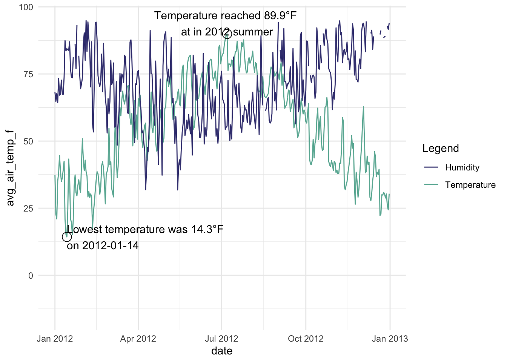
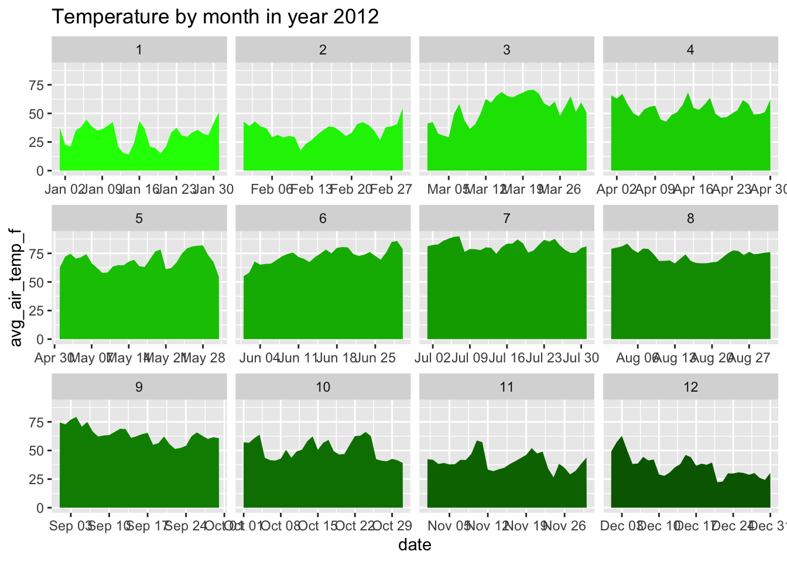

# install.packages("tidyverse")
library(tidyverse)
library(dplyr)
library(magrittr)3 Chapter 1: Introduction to R
3.1 Section 1. Getting Started With R
R is an integrated suite of software facilities for data manipulation, calculation and graphical display. Among other things it has
an effective data handling and storage facility,
a suite of operators for calculations on arrays, in particular matrices,
a large, coherent, integrated collection of intermediate tools for data analysis,
graphical facilities for data analysis and display either directly at the computer or on hard copy, and a well developed, simple and effective programming language (called ‘S’) which includes conditionals,
loops, user defined recursive functions and input and output facilities. (Indeed most of the system supplied functions are themselves written in the S language.)
The term “environment” is intended to characterize it as a fully planned and coherent system, rather than an incremental accretion of very specific and inflexible tools, as is frequently the case with other data analysis software. R is very much a vehicle for newly developing methods of interactive data analysis. It has developed rapidly, and has been extended by a large collection of packages. However, most programs written in R are essentially ephemeral, written for a single piece of data analysis.
3.1.1 Environment Setup
Before you start, you want to do these 3 things first:
Install R R is a programming language
Install RStudio RStudio is the most widely-used IDE for R
Install tidyverse tidyverse is the collection of packages that are widely used for data analysis. The detailed introduction to tidyverse can be found in Section 1.2. You can use the below command in R to install tidyverse
The pipe operator
The %>% operator, also known as the “pipe operator”, is a powerful feature introduced by the
magrittrpackage in R. It allows for a more readable and concise way of chaining together multiple function calls or operations. The pipe operator facilitates the creation of efficient and streamlined data analysis pipelines.# Using pipe operator to integrate commands example <- data.frame(x = c(1, 2, 3, 4, 5), y = c(2, 4, 6, 8, 10)) # Calculate the mean of y for rows where x is greater than 2 mean_y <- example %>% subset(x > 2) %>% pull(y) %>% mean() # Print the mean print(mean_y)
3.1.2 Introduction to Packages
In R, “packages” are collections of functions, data, and documentation designed to extend the functionality of the base R system. These packages serve as valuable tools that provide specialized capabilities, making complex tasks easier to accomplish and expanding the scope of data analysis and statistical modeling. Each package is designed to address specific data analysis needs, making it easier for users to perform tasks from different disciplines.
Using packages in R is a seamless process. Once a package is installed, you can load it into your R session using the library() function. This makes all the functions and data sets within the package available for use. The packages and collections covered in this book are listed below. Most of them are integrated into the tidyverse collection.
MASS The “MASS” package includes various functions for statistical modeling, linear and nonlinear regression, generalized linear models, time series analysis, clustering, and more. Additionally, it offers data sets used in the book’s examples and exercises, allowing users to replicate and experiment with the presented statistical methods.
Tidyverse The
tidyversepackage is a collection of R packages that provides a consistent and coherent framework for data manipulation, exploration, and visualization, promoting a tidy data format and streamlined data analysis workflows. The core packages within thetidyverse, includingdplyr,ggplot2,tidyr,readr,lubridate,magrittrandpurrr, among others, offer powerful tools for data import, transformation, visualization, and modeling.magrittr The
magrittrpackage provides a set of operators, most notably the pipe operator%>%, that enhances code readability and promotes a more fluent programming style in R. By chaining functions together,magrittrallows users to create a more structured and expressive data manipulation workflow.ggplot2
ggplot2is a versatile and comprehensive data visualization package based on the Grammar of Graphics. Withggplot2, users can effortlessly create sophisticated and aesthetically pleasing visualizations that effectively communicate insights from their data.dplyr
dplyris a powerful package designed for data manipulation tasks in R. With a concise syntax and intuitive functions likefilter(),arrange(),mutate(), andsummarise(),dplyrsimplifies and streamlines data wrangling, making it an essential tool for data analysts and data scientists.lubridate
lubridateis a package specifically tailored for working with dates and times in R. Its user-friendly functions enable users to parse, manipulate, and format date-time data, making time-related analysis and data manipulation tasks more efficient and accurate.readr
readris a fast and efficient package for reading and importing data into R. By providing easy-to-use functions to read various file formats, readr simplifies the data reading process and ensures accurate representation of data, enabling smoother data analysis workflows.
3.1.3 Variables
You can create variables like in all other programming languages using “-{” or “=”
x <- 21
print(x)[1] 21x <- "text"
print(x)[1] "text"3.1.4 Numbers and Vectors
You can also assign numeric values or vectors to your variables
Numbers can be in many forms
# Create numbers in r x <- 3.5 # numeric y <- 3L # integer z <- 1i # complexVectors
# Using the combine operator `c()` in r u <- c(1,1,2,3,5) # Using the sequence operator `:` in r v <- 1:5 print(u)[1] 1 1 2 3 5print(v)[1] 1 2 3 4 5# length of vectors length(u)[1] 5
3.1.5 Strings and Boolean
Other types of variables include strings and booleans
String
# String s <- "This is a string" print(s)[1] "This is a string"Boolean
# Boolean a <- TRUE b <- (1 > 2) print(a)[1] TRUEprint(b)[1] FALSE
3.1.6 Working with Dates
Working with dates is supported by R. Date is a specific type of object implemented in R and supplemented by other packages such as lubridate
- Date formatting
# Date formatting
date <- as.Date("2023-07-10")
formatted_date <- format(date, "%A, %B %d, %Y")
print(formatted_date)[1] "Monday, July 10, 2023"# test- Date manipulation
require(lubridate)Loading required package: lubridate
Attaching package: 'lubridate'The following objects are masked from 'package:base':
date, intersect, setdiff, union# Adding days to a date
date <- as.Date("2023-07-10")
new_date <- date + 7
print(new_date)[1] "2023-07-17"# Subtracting months from a date
date <- as.Date("2023-07-10")
new_date <- date - months(3)
print(new_date)[1] "2023-04-10"# Calculating the difference between two dates
date1 <- as.Date("2023-07-10")
date2 <- as.Date("2023-06-10")
diff <- date1 - date2
print(diff)Time difference of 30 days3.2 Section 2. Fundamentals
To perform meaningful tasks, you need to use operators, functions and loops smartly
3.2.1 Math and Logical Operators
Fundamental operators
# plus, minus, multiply and subtraction x <- 1 y <- 2 # print multiple arguments together using `cat` cat(x+y, x-y, x*y, x/y)3 -1 2 0.5Logarithm and exponential
# print exp(2) and log(1) cat(exp(y), log(x))7.389056 0Operations on vectors
# compute the vector max,min and median u <- c(-1, 0, 3, -12.5, 8.3) cat(max(u), min(u), median(u))8.3 -12.5 0# compute the sum and length cat(sum(u), length(u))-2.2 5Logical operators
# and or x <- TRUE y <- FALSE cat(x && y, x || y)FALSE TRUE
3.2.2 Functions
Functions in R are blocks of organized code designed to perform specific tasks, allowing you to efficiently reuse and modularize your code.
# Write a function that calculates the correlation between 2 vectors of the same length
my_function <- function(v1, v2) {
# add a guard clause for the input
if (length(v1) != length(v2)) {
stop("input vectors have different lengths")
}
mean1 <- mean(v1)
mean2 <- mean(v2)
numerator <- sum((v1 - mean1) * (v2 - mean2))
denominator <- sqrt(sum((v1 - mean1)^2) * sum((v2 - mean2)^2))
correlation <- numerator / denominator
return(correlation)
}
my_function(c(1,3,5,7), c(2,4,6,8)) # call the function named my_function[1] 13.2.3 If/Else Statements
# Example: Determine if a number is even or odd
num <- 7
# use the mod operator `%%`
if (num %% 2 == 0) {
result <- "Even"
} else {
result <- "Odd"
}
# print text and variables together using `cat`
cat("The number", num, "is", result)The number 7 is Odd3.2.4 Loops
Loops in R, such as for and while, enable iterative execution of code for efficient repetitive tasks.
# Use a for loop to print the first 10 elements of the Fibonacci sequence
for (i in 1:10) {
if (i == 1 || i == 2) {
prevprev = 1
prev = 1
cat(1, " ")
} else {
curr = prevprev + prev
cat(curr, " ")
prevprev = prev
prev = curr
}
}1 1 2 3 5 8 13 21 34 55 # Use a while loop to find all the divisors of 336
n = 336
divisor = 2
while (divisor <= sqrt(n)) {
if (n %% divisor == 0) {
cat(divisor, ' ') # Found a divisor, print it out
}
divisor <- divisor + 1
}2 3 4 6 7 8 12 14 16 3.3 Section 3. Data Fundamentals
3.3.1 Lists
We can store data in a list:
# List of strings
thislist <- list("apple", "banana", "cherry")
# Print the list
print(thislist)[[1]]
[1] "apple"
[[2]]
[1] "banana"
[[3]]
[1] "cherry"# access a list element
print(thislist[1])[[1]]
[1] "apple"# access multiple elements
print(thislist[1:2])[[1]]
[1] "apple"
[[2]]
[1] "banana"3.3.2 Matrices and Arrays
Matrix
Matrix is 2-D
# Create a matrix mat <- matrix(c(1,2,3,4,5,6), nrow = 3, ncol = 2) # Print the matrix mat[,1] [,2] [1,] 1 4 [2,] 2 5 [3,] 3 6Array
Array can be more than 2-D
# create a 3-dimensional array arr <- array(c(1,2,3,4,5,6,7,8), dim = c(2,2,2)) # Print the array arr, , 1 [,1] [,2] [1,] 1 3 [2,] 2 4 , , 2 [,1] [,2] [1,] 5 7 [2,] 6 8
3.3.3 Manipulating Matrices and Arrays
You can access, edit, do operations and even combine matrices and arrays using the parsing technique
Access elements
# Print the 2nd row of a matrix mat[2,][1] 2 5# Use multi-level parsing arr[1,2,1][1] 3Edit elements
# Change the second element of the first row mat[1,2] = 96 # Change the second column of the first matrix arr[,2,1] = c(97,98) # Print the matrix print(mat)[,1] [,2] [1,] 1 96 [2,] 2 5 [3,] 3 6print(arr), , 1 [,1] [,2] [1,] 1 97 [2,] 2 98 , , 2 [,1] [,2] [1,] 5 7 [2,] 6 8Perform element-wise operations
# Creating 2 matrices mat1 <- matrix(1:4, nrow = 2) mat2 <- matrix(5:8, nrow = 2) # Addition of two matrices print(mat1 + mat2)[,1] [,2] [1,] 6 10 [2,] 8 12# Element-wise multiplication of two matrices print(mat1 * mat2)[,1] [,2] [1,] 5 21 [2,] 12 32Combine matrices You can bind matrices use
rbindandcbind# Stack a matrix on the top of the other print(rbind(mat1,mat2))[,1] [,2] [1,] 1 3 [2,] 2 4 [3,] 5 7 [4,] 6 8# Link matrices side by side print(cbind(mat1,mat2))[,1] [,2] [,3] [,4] [1,] 1 3 5 7 [2,] 2 4 6 8
3.3.4 Dataframes
Dataframe is a powerful object that allows you to perform all kinds of operations on your data
# create a dataframe
Data_Frame <- data.frame (
Training = c("Strength", "Stamina", "Other"),
Pulse = c(100, 150, 120),
Duration = c(60, 30, 45)
)
# Print the data frame
Data_Frame Training Pulse Duration
1 Strength 100 60
2 Stamina 150 30
3 Other 120 45# access dataframe elements using the dollar sign
print(Data_Frame$Pulse)[1] 100 150 1203.4 Section 4. Read/Load/Output Data
Read data from local files, load data from online source, write data into local files.
3.4.1 Read Data
# Load text file
data <- read.csv("data/CMI_TRH.csv")
head(data, 5) year month day avg_rel_hum avg_air_temp_f avg_air_temp_c date_string
1 1989 2 16 87.7 26.6 -3.0000000 2/16/1989
2 1989 2 17 89.4 26.4 -3.1111111 2/17/1989
3 1989 2 18 88.0 27.1 -2.7222222 2/18/1989
4 1989 2 19 96.7 32.5 0.2777778 2/19/1989
5 1989 2 20 100.0 34.5 1.3888889 2/20/1989
date
1 2/16/1989
2 2/17/1989
3 2/18/1989
4 2/19/1989
5 2/20/19893.4.2 Write Data
# write.csv(data, file = "filename.csv", row.names = FALSE)3.4.3 Readr
The read package is designed to read rectangular data (like ‘csv’, ‘tsv’, and ‘fwf’). You can use the readr package to perform more advanced file operations in r
# install.packages("readr")
library(readr)read_csv(): comma-separated values (CSV)read_tsv(): tab-separated values (TSV)read_csv2(): semicolon-separated values with , as the decimal markread_delim(): delimited files (CSV and TSV are important special cases)read_fwf(): fixed-width filesread_table(): whitespace-separated filesread_log(): web log files
Operations of Readr
You can specify column types with a series of codes, note we are using
read_csvfrom thereadrpackage, not the built-inread.csv# Read with custom column types data <- read_csv("data/CMI_TRH.csv", col_types = cols( year = col_integer(), month = col_integer(), day = col_integer(), avg_rel_hum = col_double(), avg_air_temp_f = col_double(), avg_air_temp_c = col_double(), date_string = col_character(), date = col_date(format = "%m/%d/%Y") # be sure this format matches the one in your data ) )
Now the “date” column in your dataset has the date type
3.5 Section 5. Working with Dataframes
Dataframe is powerful with geostatistical data analysis.
3.5.1 Manipulate Data
Parsing data
You can parse data by location to get different portions of the data.
# Print first 3 rows data[1:3,]# A tibble: 3 × 8 year month day avg_rel_hum avg_air_temp_f avg_air_temp_c date_string <int> <int> <int> <dbl> <dbl> <dbl> <chr> 1 1989 2 16 87.7 26.6 -3 2/16/1989 2 1989 2 17 89.4 26.4 -3.11 2/17/1989 3 1989 2 18 88 27.1 -2.72 2/18/1989 # ℹ 1 more variable: date <date># Print first 3 rows and 3 columns data[1:3,1:3]# A tibble: 3 × 3 year month day <int> <int> <int> 1 1989 2 16 2 1989 2 17 3 1989 2 18Add a new column
# Remember this dataset we used?
head(Data_Frame) Training Pulse Duration
1 Strength 100 60
2 Stamina 150 30
3 Other 120 45 # Add a new column
New_df <- cbind(Data_Frame, NewCol = c('new1','new2','new3'))
# A new column is added to the end
New_df Training Pulse Duration NewCol
1 Strength 100 60 new1
2 Stamina 150 30 new2
3 Other 120 45 new3Remove a column
# Remove a column using the dollar sign New_df$NewCol <- NULL # The new column is gone New_dfTraining Pulse Duration 1 Strength 100 60 2 Stamina 150 30 3 Other 120 45
3.5.2 Apply functions
The apply function family in R provides powerful tools for efficiently working with arrays, lists, and data frames by applying custom functions across dimensions, simplifying complex operations and data transformations.
apply
Applies a function to rows or columns of an array-like object.
# apply the mean and sd function to a dataframe to get the mean and standard deviation of columns df <- matrix(rnorm(25), ncol = 5) # 100 random variables organzied into 5 columns print(df)[,1] [,2] [,3] [,4] [,5] [1,] 0.4483201 0.19666564 0.02761434 1.2008737 0.113252167 [2,] 0.2533063 0.87595315 -0.36260142 0.8390320 -0.950530376 [3,] -0.7239044 0.62992741 -0.79225284 0.9000176 1.321835635 [4,] 0.8049016 1.02028550 0.25099521 1.2300753 -0.005083097 [5,] 0.9070382 0.06421616 -0.84211730 -0.2969087 1.544058288apply(df, 2, function(x) c(mean=mean(x), sd=sd(x)))[,1] [,2] [,3] [,4] [,5] mean 0.3379324 0.5574096 -0.3436724 0.7746180 0.4047065 sd 0.6497665 0.4166410 0.4851581 0.6239349 1.0282009lapply
Applies a function to each element of a list, maintaining a list structure.
# use lapply to find the column sums of the 2 dataframes list_of_dfs <- list(data.frame(x = 1:3, y = 4:6), data.frame(x = 7:9, y = 10:12)) print(list_of_dfs)[[1]] x y 1 1 4 2 2 5 3 3 6 [[2]] x y 1 7 10 2 8 11 3 9 12lapply(list_of_dfs, function(df) colSums(df))[[1]] x y 6 15 [[2]] x y 24 33sapply
Applies a function to each element of a list, aiming to streamline output.
# use sapply to find the cumulative sum along columns df <- data.frame(a = c(1, 2, 3), b = c(4, 5, 6), c = c(7, 8, 9)) sapply(df, cumsum)a b c [1,] 1 4 7 [2,] 3 9 15 [3,] 6 15 24mapply
Applies a function to corresponding elements from multiple vectors or lists.
# Use mapply to find if each "divisor" divides its corresponding "integer" integers <- c(14, 196, 1321, 948, 125) divisors <- c(2, 4, 7, 12, 3) mapply(function(s, r) s %% r == 0, integers, divisors)[1] TRUE TRUE FALSE TRUE FALSE
3.5.3 Dplyr
dplyr is a powerful package within the tidyverse that provides a set of intuitive and efficient functions for data manipulation, transformation, and summarization in R.
# Load dplyr library
library(dplyr)
Attaching package: 'dplyr'The following objects are masked from 'package:stats':
filter, lagThe following objects are masked from 'package:base':
intersect, setdiff, setequal, union3.5.3.1 Study Data
Descriptive Statistics
You can get descriptive statistics for a dataframe using dplyr and the ‘pipe’ operator easily.
# Calculate descriptive statistics using dplyr summary_df <- data %>% summarise( Mean_Hum = mean(avg_rel_hum), Median_Hum = median(avg_rel_hum), SD_Hum = sd(avg_rel_hum), Min_Hum = min(avg_rel_hum), Max_Hum = max(avg_rel_hum), Count = n() ) print(summary_df)# A tibble: 1 × 6 Mean_Hum Median_Hum SD_Hum Min_Hum Max_Hum Count <dbl> <dbl> <dbl> <dbl> <dbl> <int> 1 76.0 76.7 12.5 31.8 104. 12007Select and Filter data
# Select average humidity and date selected_data <- data %>% select(avg_rel_hum, date_string) print(selected_data[1:5,])# A tibble: 5 × 2 avg_rel_hum date_string <dbl> <chr> 1 87.7 2/16/1989 2 89.4 2/17/1989 3 88 2/18/1989 4 96.7 2/19/1989 5 100 2/20/1989# Filter rows based on the value of average humidity filtered_data <- data %>% filter(avg_rel_hum > 100) print(filtered_data)# A tibble: 4 × 8 year month day avg_rel_hum avg_air_temp_f avg_air_temp_c date_string <int> <int> <int> <dbl> <dbl> <dbl> <chr> 1 2012 12 7 104. 44.4 6.89 12/7/2012 2 2012 12 8 101. 41.3 5.17 12/8/2012 3 2012 12 9 103. 42.1 5.61 12/9/2012 4 2012 12 20 102. 39.5 4.17 12/20/2012 # ℹ 1 more variable: date <date>Sort data
# Sorting the data frame by "year" column in ascending order data_sorted <- data %>% arrange(avg_rel_hum) print(data_sorted[1:5, ])# A tibble: 5 × 8 year month day avg_rel_hum avg_air_temp_f avg_air_temp_c date_string <int> <int> <int> <dbl> <dbl> <dbl> <chr> 1 2012 5 14 31.8 67.8 19.9 5/14/2012 2 2012 4 9 31.9 56.7 13.7 4/9/2012 3 2017 3 11 33.4 27.8 -2.33 3/11/2017 4 2018 4 29 35.3 49.1 9.5 4/29/2018 5 2000 5 25 35.4 66.4 19.1 5/25/2000 # ℹ 1 more variable: date <date>Group by data
You can also find the aggregate values by grouping data.
# Find the mean average humidity of each year grouped_data <- data %>% group_by(year) %>% summarise(Avg_Hum = mean(avg_rel_hum)) print(grouped_data[1:5, ])# A tibble: 5 × 2 year Avg_Hum <int> <dbl> 1 1989 87.1 2 1990 84.9 3 1991 82.2 4 1992 79.7 5 1993 80.7
3.6 Section 6. Plots and Graphics
3.6.1 Basic Plots
The built-in plot function in R allows you to create scatter plots, line charts and other common graphics for statistical analysis.
scatter plot
library(tidyverse)── Attaching core tidyverse packages ──────────────────────── tidyverse 2.0.0 ── ✔ forcats 1.0.0 ✔ stringr 1.5.1 ✔ ggplot2 3.5.2 ✔ tibble 3.3.0 ✔ purrr 1.0.4 ✔ tidyr 1.3.1 ── Conflicts ────────────────────────────────────────── tidyverse_conflicts() ── ✖ dplyr::filter() masks stats::filter() ✖ dplyr::lag() masks stats::lag() ℹ Use the conflicted package (<http://conflicted.r-lib.org/>) to force all conflicts to become errorslibrary(dplyr) library(magrittr)Attaching package: 'magrittr' The following object is masked from 'package:purrr': set_names The following object is masked from 'package:tidyr': extract# Select average humidity and date data_between_2010_2012 <- data %>% filter(year >= 2010 & year <= 2012) # Create a scatter plot plot(data_between_2010_2012$avg_rel_hum, data_between_2010_2012$avg_air_temp_c, main = "AVG Rel Humidity VS. AVG Rel Temperature in C, between 2010-2012", xlab = "X", ylab = "Y", pch = 16, col = "blue")histogram and bar plot
# Create a histogram hist(data_between_2010_2012$avg_rel_hum, main = "AVG Rel Humidity between 2010 and 2012", xlab = "Value", ylab = "Frequency", col = "lightblue")box plot
# Create a box plot for average realative humidity each year boxplot(avg_rel_hum ~ year, data = data_between_2010_2012, main = "Distribution of AVG Rel Humidity by Year", xlab = "Year", ylab = "AVG Rel Humidity", col = "lightblue", border = "black")multiple plots and organize plots
You can use par() to organize the positions of multiple plots
data_cmi <- read.csv("data/CMI_TRH.csv") # Set up a 3x4 grid for 12 plots par(mfrow = c(3, 4), mar = c(4, 4, 2, 1)) # Loop through each month for (m in unique(data_cmi$month)) { # Subset data for the current month month_data <- subset(data_cmi, month == m) # Create a histogram hist(month_data$avg_air_temp_c, main = paste("Histogram for Month=", m), breaks=20, xlab = "Average Air Temperature [C]", col = "lightgreen", probability = TRUE) # Add a bell curve curve(dnorm(x, mean = mean(month_data$avg_air_temp_c), sd = sd(month_data$avg_air_temp_c)), add = TRUE, col = "red", lwd = 2) }# Reset par settings par(mfrow = c(1, 1), mar = c(5, 4, 4, 2) + 0.1)
3.6.2 ggplot2
ggplot2 is another package that allows you to create elegant and customized plots with a concise and intuitive syntax. The ggplot2 package uses a streamlined style of grammar with multiple “layers”, allowing you to compose your own plot in a more elegant and intuitive way.
# install.packages('ggplot2')
library(ggplot2)Adding other dimensions for the plot
You can also add color and size to represent more dimensions.
# Create the bubble chart ggplot(data[1:100, ], aes(x = avg_rel_hum, y = avg_air_temp_f, size = avg_air_temp_c, color = month)) + geom_point() + labs(x = "avg_rel_hum", y = "avg_air_temp_f", title = "Bubble Chart")Create insightful visualizations
We will do an example to find the highest and lowest average air temperature in the year 2012, and plot them using
ggplot2, along with the average relative humidity# Find the highest temperature in 2012 data %>% filter(year(date) == 2012) %>% arrange(desc(avg_air_temp_f)) %>% head(1)# A tibble: 1 × 8 year month day avg_rel_hum avg_air_temp_f avg_air_temp_c date_string <int> <int> <int> <dbl> <dbl> <dbl> <chr> 1 2012 7 7 55.6 89.9 32.2 7/7/2012 # ℹ 1 more variable: date <date># Find the lowest temperature in 2012 data %>% filter(year(date) == 2012) %>% arrange(avg_air_temp_f) %>% head(1)# A tibble: 1 × 8 year month day avg_rel_hum avg_air_temp_f avg_air_temp_c date_string <int> <int> <int> <dbl> <dbl> <dbl> <chr> 1 2012 1 14 84.4 14.3 -9.83 1/14/2012 # ℹ 1 more variable: date <date>data$date <- as.Date(data$date) # Convert date strings to date objects # plot the temperature and humidity of the year 2012, labeling the highest and lowest point data %>% filter(year(date) == 2012) %>% # Filter for the year 2012 ggplot(aes(x = date)) + geom_line(aes(y = avg_air_temp_f, color = "Temperature"), linewidth = 0.5) + geom_line(aes(y = avg_rel_hum, color = "Humidity"), linewidth = 0.5) + ylim(-15, 95) + # Adjusted to include the range for -14.8 annotate(geom = "text", x = as.Date("2012-07-07"), y = 93.9, label = "Temperature reached 89.9°F \nat in 2012 summer") + annotate(geom = "point", x = as.Date("2012-07-07"), y = 89.9, size = 4, shape = 21) + annotate(geom = "text", x = as.Date("2012-01-14"), y = 14.3, # Adjust y for visibility if needed label = "Lowest temperature was 14.3°F \non 2012-01-14", hjust = 0) + annotate(geom = "point", x = as.Date("2012-01-14"), y = 14.3, size = 4, shape = 21) + scale_color_manual(values = c("Temperature" = "#69b3a2", "Humidity" = "#404080")) + labs(color = "Legend") + theme_minimal()
Plot multiple plots
You can also plot multiple in one chart
data %>% filter(year(date) == 2012) %>% ggplot(aes(x=date, y=avg_air_temp_f, group=month(date), fill=month(date))) + geom_area() + ggtitle("Temperature by month in year 2012") + theme( legend.position="none", ) + facet_wrap(~month(date), scale="free_x") + scale_fill_gradient(low = "green", high = "darkgreen")